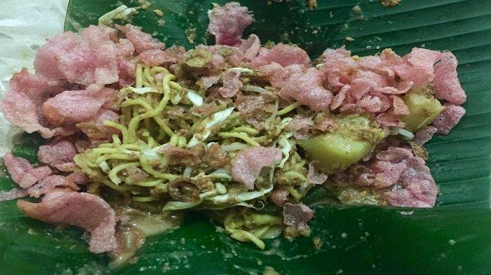
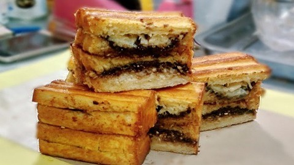

Lotek

Langkah-langkah
- Siapkan semua sayuran. Petik dan potong-potong kangkung serta daun bayam. Cuci bersih dan tiriskan. Cuci bersih tauge, kacang panjang, kol, dan labu siam. Potong-potong kacang panjang dan kol. Iris kecil labu siam.
- Rebus masing-masing sayuran. Angkat dan tiriskan.
- Haluskan bawang putih, kencur, cabai rawit, dan garam.
- Tambahkan kacang tanah goreng dan gula merah. Haluskan kembali.
- Tuang air asam, air perasan jeruk limau, dan air matang secukupnya hingga saus berubah jadi pasta.
- Masukan sayur rebus. Aduk rata hingga sayur terlumuri oleh saus seluruhnya.
- Tata di piring dan siap disajikan bersama bahan pelengkap.
- Sayuran jangan direbus terlalu lama agar teksturnya tetap terjaga.
Roti Bakar Bandung

Bahan-bahan :
- 1 roti tawar bandung
- Margarin
- Meises
- Keju parut
- Kental manis putih
Langkah-langkah :
- Siapkan teflon ukuran 24. Olesi bagian dalam dan luar roti dengan margarin.
- Untuk yang meises, masukkan meises ke dalam roti sebelum dibakar. Sedang yang keju, dimasukkan ke dalam roti setelah roti dibakar dan dituangi kental manis putih.
- Bakar roti hingga matang. Kalo suka yg tipis bakarnya sambil ditekan2 ya.
- Angkat dan potong2 dengan pisau roti. Siap dinikmati.
Kopi Capuccino
Bahan-bahan :
- Biji kopi favoritmu
- Timbangan
- Penggiling kopi
- Air
- Susu sapi segar
- Presso/aeropress
- French press
- Server atau gelas untuk penyajian cappuccino
Langkah-langkah :
- Pertama-tama, kita harus membuat espresso!
- Panaskan air hingga 90 derajat Celcius.
- Sambil menunggu air mendidih, giling kopi 18 gram.
- Masukkan kopi yang sudah digiling ke dalam presso atau aeropress.
- Press kopi. Untuk 18 gram kopi, masukkan air 90 derajat Celcius sebanyak 60 ml. Mengapa airnya sangat sedikit? Karena kita mau menghasilkan espresso, atau saripati kopi, atau konsentrat. Dalam hal ini, rasio 1:3,4 via aeropress bisa menjamin kekentalan menyerupai espresso.
- Masukkan espresso ke dalam gelas penyajian.
- Kedua, mari kita buat susu untuk teman si espresso!
- Panaskan susu sapi segar hingga 90 derajat Celcius.
- Press 120 mililiter susu sapi dengan menggunakan french press. Butuh sedikit tenaga agar susu yang kita press mengeluarkan busa. Busa inilah yang menghasilkan tekstur yang enak saat mencicip si cappuccino nanti. Biasanya, kita harus “mengocok” si french press–katakanlah 1 menit–untuk menghasilkan foam yang cukup.
- Terakhir, mari kita selesaikan urusan cappuccino ini!
- Tuangkan susu panas ke dalam espresso. Pelan-pelan dan jangan terlalu penuh, agar tak tumpah.
- Jika ada bubuk coklat, taburkan di atasnya sebagai garnish. Ada juga yang suka sedikit serutan kayu manis.
- Secangkir cappuccino spesial siap diseruput.